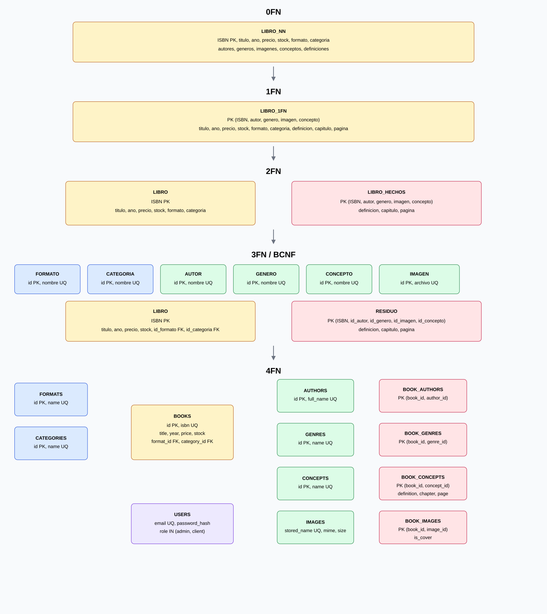

Parcial 1 · Ejercicio guiado 02
Tarea 2a: normalización hasta 4FN
Cómo está armada la hoja
El Excel es una sola hoja, de arriba hacia abajo, como en Bases de Datos Avanzadas: primero la tabla ancha y, debajo, cada forma normal con las tablas que salen de partir la anterior. Amarillo es llave primaria; verde es llave foránea. Los ejemplos son dos libros del seed: Cloud Computing y Cien años de soledad.
- 0FN (arriba): una fila por libro. Autores, géneros, imágenes y conceptos van en listas dentro de la misma celda.
- 1FN (debajo): un valor por celda. El Cloud Computing se copia 8 veces (2 autores × 2 géneros × 2 conceptos). Ahí se ve el producto cartesiano.
- 2FN: lo que depende solo del ISBN pasa a
LIBRO. Lo demás sigue mezclado. - 3FN / BCNF: formato, categoría, autor, género, concepto e imagen se vuelven catálogos. El libro guarda foráneas.
- 4FN (abajo del todo): un puente por cada hecho independiente:
book_authors,book_genres,book_images,book_concepts. La definición, el capítulo y la página viven en el par libro–concepto.
Por qué no se dejan listas en books
ISBN ↠ autor, ISBN ↠ género, ISBN ↠ imagen e ISBN ↠ concepto son dependencias multivaluadas independientes. Si se quedan en la misma tabla, cambiar un autor obliga a repetir todos los géneros y todos los conceptos. La definición de IaaS en el libro de Cloud Computing no es un atributo del concepto a solas: cambia de un libro a otro.
Diagrama
